、
、 、
、 和
和  证明了费马大定理。解释哪些整数属于这一类恐怕会离题太远，知道阐述这个定理是基于热尔曼结果的进展就足够了。
证明了费马大定理。解释哪些整数属于这一类恐怕会离题太远，知道阐述这个定理是基于热尔曼结果的进展就足够了。定义一个群相当简单，只需要 4 条公理：封闭性、结合律、单位元和逆元（见第 11 章）。如此的简洁性扩大了群的范围，就像简单的描述“四条腿的生物”比更长的描述“拥有长牙和躯干的四条腿生物”包含更多的物种一样。正是群定义中的这种简洁性使得群的适用范围不仅限于数字。此外，这种简洁性也给包含正规子群这个关键概念的群留有足够的余地，以便拥有复杂而有趣的内部结构。
域（见“数学基础知识：域论”）是一个更复杂的对象，它的定义需要 10 条公理。域中的基本合成方式不止一个，而是两个：加法和乘法。（减法和除法实际上就是和其相应的逆做加法和乘法运算：如 8-3=8+(-3)。）这种更高的复杂程度使得“域”的概念与普通数字的关联更加密切。矛盾的是，这也限制了它拥有有趣的内部结构的可能性。
还有一个近世代数研究较多的数学对象：环。环比群更复杂，但没有域那么复杂。因此，尽管它的适用范围不如群那么广泛，但是它在普通数之外的应用比域更广。与群类似，环可以拥有有趣的内部结构。它的关键概念是理想，我将在本章和第 13 章详细阐述这一点。
事实上，同一些中间概念的情况类似，环的概念同时给数学家们提供了两个世界上最好的东西。例如，它处于现代代数几何的中心，是近世代数中最深刻、最具挑战性的思想的源头。然而，经过了相当漫长的一段时间之后，人们才开始认识到环的全部威力。
曾经有人说环论最初源自费马大定理，这实际上是一个误解。不过，用费马大定理来引出环论是一个不错的切入点，因此，我从这里开始讲述。
※※※
我曾在第 2 章中提过费马和费马大定理。1637 年前后，费马把这个定理写在了丢番图的《算术》一书的页边空白处，这个定理断言当正整数
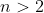
时，方程 没有正整数解 、、。1659 年，费马对
没有正整数解 、、。1659 年，费马对 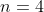
的情形给出了一个粗略的证明，高斯很久之后才给出了完整的证明。1753 年，欧拉给出了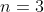
时的证明。此后的半个世纪对此都没有实质性的进展，直到法国数学家索菲·热尔曼（1776—1831）出现。热尔曼是本书介绍的三位伟大的女数学家中的第二位（希帕提娅是第一位），她对很大的一类整数 、、 和 证明了费马大定理。解释哪些整数属于这一类恐怕会离题太远，知道阐述这个定理是基于热尔曼结果的进展就足够了。
1825 年，当时 72 岁的法国数学家阿德里安–马里·勒让德（1752—1833）和德国数学家勒热纳·狄利克雷（1805—1859，他的名字像法国人）分别证明了这个定理在  时的情形。到此，每一个人都知道真正的挑战就是对素数 证明这个定理，所以下一个目标是
时的情形。到此，每一个人都知道真正的挑战就是对素数 证明这个定理，所以下一个目标是
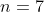
。另一位法国数学家加布里埃尔·拉梅（1795—1870）于 1839 年证明了 的情形。然而，就在这时，故事出现了新的转折。※※※
回忆一下，整数集  是由所有正整数、所有负整数和 0 组成的。
是由所有正整数、所有负整数和 0 组成的。
（这个数列向左右两端无限延伸。）这里的 不是域，你可以在其中随意进行加法、减法和乘法运算，结果仍在 中，但是，你只有在某些时候才可以进行除法运算。如果你用 -12 除以 4，那么其结果仍在 中；但是，如果你用 -12 除以 7，那么其结果不在 中。由于在 中不能随意进行除法运算，因此它不是一个域。
但是， 本身就足够有趣，而且很重要，值得引起数学家们的关注。即使除法不总是可行的，你也可以进行大量的加法、减法和乘法运算。例如，你可以研究因子分解和素性问题（即什么样的数是素数）。
此外，还有很多其他数学对象与 类似，在其中可以随意做加法、减法和乘法，但不能随意做除法。比如，多项式就是如此。给定两个多项式，如
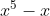
和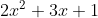
，我们可以把它们相加，得到一个多项式（结果是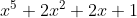
）；或者把它们相减，得到一个多项式（结果是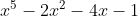
）；或者把它们相乘，得到一个多项式（结果是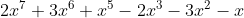
）。但是，把它们相除不一定能得到一个多项式。在这个例子中，我们就不能做除法，但在某些情况下，我们就可以做除法，比如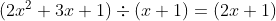
。这就像整数的情况一样！11大约在 1585 年，荷兰代数学家西蒙·斯泰芬第一次注意到，或者至少第一次论述整数与多项式之间的这种相似性。顺便说一下，我很抱歉没有在正文中单独介绍斯泰芬，他是伟大的十进制的传播者，为了使它被欧洲人接纳，斯泰芬做了大量的宣传。他的关于这方面的一本书激发了托马斯·杰斐逊为新生美国提出十进制货币体系的建议，“十美分硬币”（dime）这个名词也应该间接地归功于他。
这种可以进行前三种运算、但不能进行第四种运算的数学对象叫作环 2。现在你应该能明白我所说的，按照顺序，环介于群和域之间的意思了。“域”的定义比“环”更严格，其中有完整的除法。“群”的定义更宽松，其中只有一种合成两个元素的方式，参见第 11 章中定义抽象群的 4 个公理。定义一个域需要 10 条公理，定义一个环只需要 6 条公理。
2专业代数学家对此一定会怒不可遏。是的，我叙述得过于简单了，尽管只是过了那么一点点。事实上，环的代数概念要比我在上面给出的例子所蕴含的意义宽泛得多。例如，一个环不必有乘法单位元，即 1，而整数环 和多项式环都有 1。尽管加法必须是可交换的，但乘法不必是可交换的。不过，本书不是一本教材，我只想让大家了解大致的想法。
在关于数论的一些研究中，高斯发现了一类包括复数在内的新环。高斯不可能使用“环”这个词——直到一百年后它才出现。高斯也不可能使用其抽象概念，不过他发现的确实是环。今天，这个环被称为高斯整数环，它是由像 -17+22i 这样的实部和虚部都属于整数 的复数组成的环。你也可以像高斯一样，对这样的“复整数”发展出类似整数的算术。
这种算术一点儿也不简单。一般说来，环甚至比它初看起来更不适合做除法。你不难在 中引入部分除法，像普通算术那样发展出素数和因子分解理论。事实上，负数被包含在 中增加的困难微不足道。在其他环中构建一个适当的素数和因子分解理论通常更困难。这对于高斯整数环来说是可行的，对于欧拉在证明 的费马大定理时使用的另一个环来说也是可行的，这个环比高斯整数环更“大”一点儿，还允许
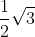
这样的数存在。但是，当你深入研究这类环时，就会出现令人讨厌的事情。最令人讨厌的一件事就是唯一分解出现了问题。在整数环 中，任何整数都只能用唯一一种方式表示成一个单位与一组素数之积。（在环论中，单位就是能够整除 1 的数。 有两个单位：1 和 -1。高斯整数环有四个单位：1、-1、i、-i。3）例如，整数 - 28 分解成 -1×2×2×7。除了改变这些因子的顺序之外，这个数不会有其他不同的因子分解。环 具有唯一因子分解性质。
3以下是环论中一个令人惊讶的反直觉的例子：在形如
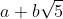
的数组成的环中， 和
和  都是普通整数，
都是普通整数，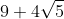
是这个环中的一个单位，它可以整除 1。读者可试着验证。另外，考虑由数
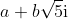
组成的环，其中 和 都是整数。在这个环中，6 有两种分解方式，一种是 2×3，另一种是 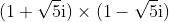
。注意，这四个因子都是这个环中的素数（素数的定义是除了单位和自身之外没有其他因子）。唯一因子分解性质出现了问题。※※※
这个不幸的状况导致了 1847 年的一场大败。当时，法国科学院为费马大定理的证明设立了一枚金牌和 3000 法郎的奖金。拉梅在成功证明 的情形之后，在那一年的 3 月 1 日，拉梅在法国科学院的一次会议上宣布，他即将完成这个定理的一般证明，即对所有 的证明。他补充说，这个证明的想法来自他在几个月前与刘维尔的一次交流。
当拉梅完成证明时，刘维尔本人站了出来，向拉梅的方法泼了冷水。他指出：第一，这个方法不是原创的；第二，这个证明依赖于某些复数环中的唯一因子分解性质，而这个性质是不可靠的。
接着，柯西发言了。他支持拉梅，说拉梅的方法很可能给出了一个证明，并透露他本人也在沿着相同的思路进行研究，他可能很快就能得到自己的证明。
科学院的这次会议自然而然地引发了人们对费马大定理的持续几个星期的疯狂研究，其中不仅有拉梅、柯西等人，还有其他被奖金吸引的人。
接着，12 个星期之后，在拉梅或柯西宣布他们的完整证明之前，刘维尔在科学院宣读了一封信。这封信来自德国的一位数学家——爱德华·库默尔（1810—1893），他一直在关注巴黎那次会议的数学消息。库默尔指出，在拉梅和柯西所采用的方法中，唯一因子分解性质的确不成立，并声称他自己在三年前就已经证明了这个结果（不过他是在一本不起眼的杂志上发表他的证明的），但是如果他使用一年前发表的一个概念，那么这种情况就会得到一定程度的改善，这个概念就是理想数。
过去人们常说（贝尔在《数学大师》中说过），库默尔在他研究费马大定理时发展了这个新概念。然而，现代学者认为，在发现这些理想数之前，库默尔并没有对这个定理做什么研究。直到那时，以及当他知道巴黎的争端之后，他才开始挑战这个定理。
在刘维尔宣读完这封信的几周后，库默尔向柏林科学院递交了一篇论文。在这篇论文中，他对一大类素数（即所谓的正则素数 4）证明了费马大定理。库默尔的证明使用了他发现的理想数。这是一个多世纪以来在攻克费马大定理的征程中取得的最后一个真正重要的进展。1994 年，安德鲁·怀尔斯最终证明了这个定理。
4定义正则素数没有简单的方法。一个最不复杂的定义方法如下。如果一个素数  不能整除伯努利数
不能整除伯努利数
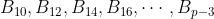
的分子，那么素数 就是正则的。（我已经在第 9 章中介绍过伯努利数。）例如，19 是正则素数吗？只要它不能整除伯努利数 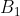
0、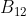
、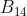
、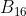
的分子，即 5、691、7 和 3617，那么它就是正则素数。因为 19 的确不能整除其中的任何一个数，所以 19 是一个正则素数。第一个非正则素数是 37，它恰好可以整除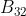
的分子，这个分子是 7 709 321 041 217。那么，这些“理想数”是什么呢？这不太好解释。数学史学家通常不会费心去解释它，实际上，库默尔的理想数很快就被一个更强大、更一般的概念——理想所取代，理想不是一个数，而是一个由数构成的环。我认为这对库默尔有点儿不公平，所以我在这里大概介绍一下他的概念。
库默尔那时正在研究分圆整数，我先简要解释一下这个概念。读者可能还记得在介绍单位根时提到的“分圆”一词。当这个词出现在数学中时，它通常都与单位根有关。假设 是某个素数， 次单位根是什么？当然 1 是一个 次单位根。其他 次单位根都均匀地分布在复平面上的单位圆周上，如图 RU-1 所示。如果我们称（在 1 之后沿逆时针方向的）第一个根为  ，那么其他的根是
，那么其他的根是
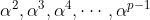
。分圆整数是形如
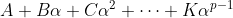
的复数，其中所有的大写字母系数都是 中的普通整数， 是一个 次单位根。例如，如果 是 3，那么这些单位根就是我们的老朋友：1、 和
和  ， 和 是二次方程
， 和 是二次方程  的两个根（见“数学基础知识：单位根”）。对于
的两个根（见“数学基础知识：单位根”）。对于
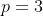
的情形，分圆整数的一个例子就是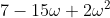
。注意，这是一个非常普通的复数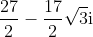
。我刚才是用 1、 和 来表示它的。
这些分圆整数有一些奇特而美妙的性质。仍以 为例，因为 ，所以对任意整数 都有
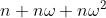
。因为一个数加上 0 仍然保持不变，所以我可以在等式左边加上 ，得到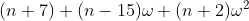
，这个数的值不变，你可以很容易地代入 和 的实际值来验证这一点。正如 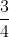
、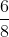
、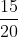
、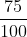
等无穷多个分数都表示同一个有理数一样，对于 的任意值，我的分圆整数的第二种形式总是表示同一个分圆整数。
库默尔研究了这些分圆整数的因子分解。事实证明，这是一个深奥而棘手的问题。正如你可能猜到的那样，唯一因子分解性质不成立的问题很快就出现了（尽管也不是非常快：当
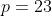
时才首次出现这样的问题。这就是理想数理论难以解释的一个原因）。这就是库默尔解决的一个特殊问题。他对素数的常见定义加以限制，使其更适合分圆整数，从而解决了这个问题。接着，库默尔从这些“真素数”出发，构建了他的理想数，得到了完整的分圆整数的因子分解理论。除此之外，库默尔还证明了他的伟大结论：费马大定理对正则素数成立。不过，这只是一个特殊的、局部的应用。在环论的强大威力得到充分展示之前，人们必须达到更高的一般化水平。下一代数学家们就达到了这个更高的水平。
※※※
库默尔在 1847 年给法国科学院的信所表达的意义不仅仅是数学。库默尔当时 37 岁，是普鲁士布雷斯劳大学的一名教授。虽然此时距德国统一还有 20 年，但是民族情绪很强烈，即便不是作为一个国家而是作为一个民族，德国人民在欧洲文化中也是一股崛起的伟大力量。法国在拿破仑战争期间对德国的侮辱，在 40 年之后仍然引起了德国人民的强烈愤恨。
库默尔对这种愤恨有着切身体会。他的父亲是距柏林东南 100 英里处 5 一个叫索罗的小镇上的一名医生，在库默尔三岁时，他的父亲因拿破仑大军团在从俄国撤退时带到这个地区的斑疹伤寒而去世。因此，库默尔是在极度贫困中长大的。尽管库默尔看起来是一个和蔼可亲的人，还是一位有天赋的受欢迎的老师，但是我们很难不去猜测，库默尔在向法国科学院展示他的超前想法时，内心一定会感到一丝满足。
5这个小镇今天位于波兰西部，并改名为扎雷。而布雷斯劳是今天波兰的弗罗茨瓦夫。第二次世界大战之后，整个德国–波兰边界向西移动了。
拿破仑给德国人造成的挫败感和耻辱感也带来了更大的影响。德国人促使普鲁士和德国各小州的教育、技术和师资培训体系进行了全面改革。这个成果以及伟人高斯的榜样和威望造就了 19 世纪中叶一批一流的德国数学家：狄利克雷、库默尔、亥姆霍兹、克罗内克、艾森斯坦、黎曼、理查德·戴德金（1831—1916）和克勒布施。
到了 1866 年德国统一的时候，德国甚至已经有了两个值得夸耀的卓越的数学中心：柏林和哥廷根，它们有各自的独特风格。柏林数学崇尚纯粹、致密和严谨 6，而哥廷根数学则更富有想象力、更几何化；一个是罗马风格，一个是雅典风格。魏尔斯特拉斯和黎曼就是这两种风格的典型代表。如果没有给出一份长达八页的详尽证明来说明某件事的必要性，柏林学派的魏尔斯特拉斯根本不会理睬。另外，黎曼展示了函数的令人惊讶的图景，他的函数漫步于复平面、弯曲空间以及自相交曲面之上，他只在必要时才偶尔停下来匆匆给出一个证明。
6柏林这个数学中心弥漫着古老的日耳曼浪漫主义气息。克罗内克曾说：“我们是诗人。”魏尔斯特拉斯认为“一个数学家如果不同时具备诗人的气质，他永远不会成为真正的数学家”，等等。
而与此同时，法国的数学已经开始衰落。不过这是相对而言的，毕竟这个国家有值得炫耀的刘维尔、埃尔米特、贝特朗、马蒂厄和若尔当（1838—1922），法国不缺乏数学天才。然而，巴黎在数学上的辉煌时代已成为过去。柯西在高斯去世两年后也去世了。但是，柯西的去世标志着法国数学的卓越时代的结束，而高斯的去世则发生在德国数学迅速崛起的时期。
※※※
理查德·戴德金是 19 世纪中叶那批德国数学家中最出色的一位。他是一个非常安静、沉默寡言的人，除了数学之外，他对其他事情都不关心。戴德金的一生波澜不惊，大部分时间在他的家乡（也是高斯的家乡）不伦瑞克当大学教师。
戴德金对代数学的贡献有三个方面。第一，他给出了理想的概念。第二，他与海因里希·韦伯（1842—1913）一起开创了函数域理论的研究，我在关于“数学基础知识：域论”的结尾给出了函数域的简要介绍（在第 13 章中将有更详细的介绍）。第三，戴德金开启了代数的公理化进程，利用集合论语言纯粹抽象地定义代数对象。这种公理化方法在半个世纪后完全成熟，成为近世代数观点的基础。
理想这个概念不是一个能让非数学专业人士容易理解的概念，因为我们不太容易举出具有启发性的例子。首先，一个理想是一个子环，是一个环中环。因此，它是一个由数（或多项式，或组成环的其他对象）组成的集合，在加法、减法和乘法运算下是封闭的，嵌入在相同类型的一个更大的集合中。
但是，理想不是随便一个子环。它具有这样的特性：如果你任取其中的一个元素，把这个元素与大环中的一个元素相乘，其结果仍在这个子环之中。
取我们最熟悉的整数环 ， 中一个理想的例子是，某个给定数的所有倍数的全体。假设我们取 15，下面就是一个理想：
这个理想是由所有形如
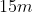
的整数组成的，其中 是任意整数。显然，理想在加法、减法和乘法运算下是封闭的。而且，正如我在前面说的那样，如果你把这个理想中的任意一个数，比如 30，乘以大环 中的任意一个数，比如 2，那么其结果 60 还在这个理想之中。
是任意整数。显然，理想在加法、减法和乘法运算下是封闭的。而且，正如我在前面说的那样，如果你把这个理想中的任意一个数，比如 30，乘以大环 中的任意一个数，比如 2，那么其结果 60 还在这个理想之中。
如果我对此进行进一步的说明也许会更好：现在从 中任取两个数，构造它们的所有线性组合。以 15 和 22 为例，构造所有可能的数
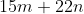
，其中 和 是任意整数。这应该是一个更有趣的理想。
不幸的是，当我们研究 时，这样做不会产生新的理想，因为 的结构太简单了。如果你让 和 取遍所有整数，那么 就取遍所有可能的整数，这很容易证明 7。所以，这个“理想”实际上就是整个 。如果不取 15 和 22，而是取两个有公因子的数，比如 15 和 21，那么我们将得到由它们的最大公因子 3 生成的理想。所以，上面给出的这种理想是 中除了 本身（和只由零组成的平凡理想）之外仅有的理想。事实上， 中的理想并不非常有趣。
7证明：假设这不是真的。假设存在某个整数  ，对于任意 和 ，它都不等于 。重新把 写成
，对于任意 和 ，它都不等于 。重新把 写成
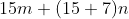
，这也等于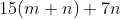
。于是 不能用其中任何一种方式表示，即 15 的倍数加上 7 的倍数。但是观察一下我的做法：我用一对新数（一个数是原来这对数中更小的一个，另一个数是原来这对数之差：15 和 7）取代了原来的一对数（15 和 22）。显然，我可以用这种“递降法”一直进行下去，直到无法进行下去为止。这是欧几里得证明的一个初等算术问题，如果我这样做，那么我最终得到一对数 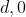
，其中 是我原来的那对数的最大公因子。15 和 22 的最大公因子是 1，所以，假设对任意的 和 ，整数 都不等于
是我原来的那对数的最大公因子。15 和 22 的最大公因子是 1，所以，假设对任意的 和 ，整数 都不等于 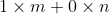
。但这是荒谬的：因为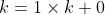
。我用反证法证明了这个结论。我们可以用形式化的代数语言这样描述：在任意环中，某个特定元素 的倍数的全体组成的集合被称为由元素 生成的主理想。像 这样，每个理想都是主理想的环，被称为一个主理想环。在一个不是主理想环的环中，你确实可以这样生成理想：取两个或更多的元素
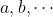
，构造它们的所有可能组合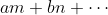
，这个理想被称为“由 生成的理想”。其实，对环进行分类的一种方法，就是研究这个环的理想是如何生成的。例如，有一类重要的环称为诺特环，它的理想都是由有限个元素生成的。在由复数组成的环中，理想变得非常有趣。戴德金给出了理想的抽象定义（也就是我刚才给出的定义），接着他将其运用于更广的一类复数环中，这类环要比库默尔研究的环的范围广泛得多。通过这样做，他能够对任何环创造出“素数”“约数”“倍数”和“因子”的适当定义。
这些定义的表达方式比以往任何数学家尝试过的方法都更为一般。虽然戴德金并没有完全脱离数的领域，但是他用定义公理来引入数学对象——域、环（他称之为“序”）、理想、模（这是一个向量空间，其标量取自于环而不是域），和近世代数教材里的做法一样。因为他没有现代集合论的术语可用，所以戴德金的定义看起来还不够现代，但是他的方向是正确的。
在第 13 章介绍代数几何时，我将更详细地讨论理想。
※※※
一旦戴德金的方法被广泛传播和接受，以及理想的概念被人们所熟悉，环具有像群一样有趣的内部结构的这个事实就变得很清晰了。这就是环论兴起之时。不过，它还称不上环论。使用它的人总是想着它的一些特殊应用：在几何、分析、数论方面的应用，特别是在代数方面的应用，即在多项式上的应用。直到第一次世界大战之后，环女士才登场，带来了清晰连贯的理论，涵盖了所有这些领域，并使它们建立在稳固的公理化基础之上。
我将在下文中再介绍这位女士。在戴德金与这位女士之间的 40 年里，当然有很多数学家向前推进了这个理论，其中包括一些伟大的数学家。然而，那些最有趣的工作是几何方面的，属于下一章要讲的内容。在这里，我只提及那段时期研究环论的一个人名，因为这个人和他的生活都很有意思。
他的名字就是埃马努埃尔·拉斯克（1868—1941），人们记住他不是因为数学，而是因为国际象棋。事实上，他是 1894 年到 1921 年连续 27 年的国际象棋世界冠军，是迄今为止保持这个头衔时间最长的人。
拉斯克于 1868 年出生在当时属于德国东部的一个地区，第二次世界大战之后，边界被重新划分，那里成为波兰西部的一部分。拉斯克是犹太人，他的父亲是小镇上的犹太教堂的合唱指挥，这个小镇原来叫柏林兴，现在叫巴尔利内克。拉斯克跟他的哥哥学会了国际象棋，十几岁时就在镇上的咖啡馆下国际象棋赚零花钱。他在国际象棋界迅速崛起，20 岁时在德国柏林赢得了他的第一次锦标赛冠军，25 岁时在北美（美国纽约、费城、加拿大蒙特利尔）举行的一系列比赛中打败了上届冠军威廉·斯坦尼茨（1836—1900），成为世界冠军。
拉斯克受到的数学教育非常全面，但是被他的国际象棋活动打断了。他曾在德国柏林大学、哥廷根大学、海德堡大学就读，从 1900 年到 1902 年，他在埃尔朗根大学师从希尔伯特，33 岁时在那里获得博士学位。他对环论的主要贡献是给出了一个相当深奥的准素理想的概念，这个概念有点儿像在对整数进行分解时得到的素数的幂（例如
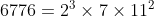
）。有一类环叫作拉斯克环，还有一个重要定理叫作拉斯克–诺特定理，这是一个与诺特环的结构有关的定理。拉斯克的晚年很悲惨。1933 年希特勒上台时，拉斯克和他的妻子已经在德国安顿下来，过着舒适的退休生活。然而，纳粹没收了拉斯克的所有财产，把身无分文的夫妻俩撵出了他们的祖国。六十多岁的拉斯克不得不重新参加国际象棋比赛。他在英国生活了两年，然后搬到莫斯科。后来，他搬到了纽约，1941 年在纽约去世。8
8我参考的是汉纳克所著的《埃马努埃尔·拉斯克：国际象棋大师的一生》（1959 年出版），据说这是权威的拉斯克传记。我手中的是 1959 年海因里希·弗伦克尔的翻译版，其中有爱因斯坦写的前言。这真令人羡慕，就如同达·芬奇为你的著作画插图一样。
※※※
诺特环和拉斯克–诺特定理表明，这个故事中显然有一个名叫诺特的人。这里实际上有两个名叫诺特的人，一个名气小些，一个名气大些。名气较小的是父亲马克斯·诺特（1844—1921），名气较大的是他的女儿埃米·诺特。埃米·诺特把自戴德金的开创性工作之后 40 年的成果整合到一起，转化为现代环论。
马克斯·诺特是德国南部城市埃尔朗根（在纽伦堡北边）的一名数学教授。1882 年埃米在那里出生。我们必须把她的职业生涯放在她成长的德意志帝国的大环境中来看，当时是俾斯麦（1871 年至 1890 年的德国宰相兼外交大臣）和威廉二世（1888 年至 1918 年在位的德国皇帝）的德意志帝国。即使按 19 世纪末的标准来衡量，在威廉二世统治下的德国，女性受到严重歧视。我想，即使是那些不会说德语的人也可以从德语口号“Kinder、Küche、Kirche”（子女、厨房、教堂）中大概推测出女人在德国社会中的地位。据说，这句话被用来赞许威廉二世的皇后奥古斯塔·维多利亚的态度，不过她口中说的应该是皇帝、子女、厨房和教堂。要想深入了解这个话题，我推荐特奥多尔·冯塔纳小说《艾菲·布里斯特》（1895 年）9。很多人肯定都熟悉法国作家福楼拜的《包法利夫人》（1856 年）和俄国作家托尔斯泰的《安娜·卡列尼娜》（1877 年）中对 19 世纪叛逆女性的悲惨遭遇的经典描述，但是很少有人知道德国在这方面的作品，也就是冯塔纳的这部杰作。10
9这部著作有中译本，《艾菲·布里斯特》，上海译文出版社，1980 年出版。——译者注
10宁那·华纳·法斯宾德在 1974 年制作了一部非常感人的电影版本，汉娜·许古拉饰演艾菲·布里斯特，沃尔夫冈·申克饰演她的丈夫殷士台顿。
因此，当埃米·诺特在 18 岁左右决定将纯数学研究作为她的事业时，她决定迈过一座险峻的大山。她的父亲是一名数学家，还是一所著名大学的教授，尽管她拥有这样的优势，情况仍然如此。1900 年，当诺特做出这个决定时，女性只能作为旁听生参加大学课程，而且还必须得到授课教授的允许。在 1900 年到 1902 年，埃米·诺特在埃尔朗根大学旁听了数学课，接着在 1903 年到 1904 年在哥廷根大学旁听。
到了 1907 年，德国开展了一些适度的改革，诺特获得了埃尔朗根大学授予的博士学位，这是德国的大学授予女性的第二个数学博士学位。这个博士学位本可以让她获得在大学任教的资格，然而，“特许任教资格”还没有向女性开放。她在埃尔朗根大学工作了八年，一直是博士研究生的无薪导师和临时讲师。但没有什么事能够阻止她发表文章，她很快就因为在数学方面的杰出工作而闻名。
这些事发生在爱因斯坦 1905 年发表他的狭义相对论之后的几年里。当时，爱因斯坦正全身心投入在他的广义相对论研究中，其目标是把引力纳入他的理论中。然而，他还有一些困难需要克服。1915 年 6 月到 7 月，爱因斯坦在哥廷根大学的一些讲座中介绍了他的广义相对论和一些没有解决的问题。爱因斯坦在谈到这件事时说：“让我感到高兴的是，我成功地说服了希尔伯特和克莱因。”
这的确值得高兴。尽管当时的希尔伯特和克莱因已经过了职业巅峰期（当时希尔伯特 53 岁，克莱因 66 岁），但他们依然是数学巨人，而 36 岁的爱因斯坦还只不过是青年才俊。当然，在爱因斯坦在 1915 年来做演讲之前，希尔伯特和克莱因就很有兴致地关注了他的思想的发展。现在他们“相信”了爱因斯坦（可能是相信爱因斯坦的思路是正确的），把注意力放在广义相对论的突出问题上。他们知道埃米·诺特在相关领域所做的一些工作，因此邀请她到哥廷根来。〔那些与特定变换中的不变量有关的领域，我将在下面阐述其想法。相对论中的关键变换就是洛伦兹变换，它告诉我们从一个参考系转换到另一个参考系时，坐标（即三个空间坐标和一个时间坐标）是如何变化的。这个变换之下的不变量是“原时”，
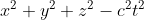
，至少在微积分所需的无穷小层次上是这样的。〕诺特如期到达了哥廷根。在几个月的时间里，她写出了一篇精彩的论文，解决了广义相对论中一个棘手的问题，并给出了一个至今仍让物理学家珍视的定理。爱因斯坦也赞扬了这篇论文。埃米·诺特出名了。
※※※
至此，人们已经承认埃米·诺特是一流的数学家，但是她的职业困扰依然没有结束。第一次世界大战开始的第二年，埃米·诺特的弟弟弗里茨（也是一名数学家）到军队服役。尽管按照威廉时代的大学的标准，哥廷根大学虽然是自由的，但是哥廷根大学仍不愿让女性担任教职。戴维·希尔伯特是一个思想开明的人，他只凭真才实学来评判数学家，他勇敢地为诺特争取教职，但是没有成功。
双方的一些争论已经成为数学家中的传说。校方说：“当我们的战士返回大学，发现他们将在一个女人手下学习时，他们会怎么想？”希尔伯特说：“我不明白为什么候选人的性别是反对她成为无薪讲师（即讲师的薪水由学生支付）的理由。毕竟我们是一所大学，而不是澡堂。”11
11“Aber meine Herren, wir sind doch in einer Universität und nicht in einer Badeanstalt.”你不得不喜欢希尔伯特。康斯坦丝·里德在 1970 年写了英文版的传记《希尔伯特》。
希尔伯特帮诺特解决问题的方法很独特：他以自己的名义开设了课程，然后让诺特去授课。
在第一次世界大战战败后，德国的社会全面自由化，女性终于有可能获得任教资格，从而得到一份大学教职，尽管只是一名依靠学生支付讲课费的无薪讲师。1919 年，诺特正式拿到了特许任教资格。1922 年，她在哥廷根大学得到了带薪职位，但不是终身教职，而且微薄的薪水很快就不足以应付通货膨胀。
在战后最初的几年里，诺特整理了所有关于环的研究成果，把它们转化成一个清晰连贯的抽象理论。她于 1921 年发表的论文《环中的理想论》（“Idealtheorie in Ringbereichen”）（当时还没有这些术语）被认为是近世代数史上的里程碑，它不仅给出了交换环 12 的内部结构的关键结果，而且提供了一种很快被其他代数学家采用的研究方法，即“近世代数”的严格公理化方法。
12对于代数学家来说，“交换”和“非交换”是代数学的两种不同风格，产生了不同的应用。我无法在这类历史概述中传递这些风格之间的差异，所以我不打算详细讨论交换和非交换的差别，只是为了让大家了解一些基本概念。
范德瓦尔登说：“在哥廷根，对我来说最重要的事是我认识了埃米·诺特，她完全重造了代数，比以往任何研究都更一般化……”
到了 20 世纪 30 年代初，埃米·诺特已经成为哥廷根大学的一群充满活力的研究人员中的中心人物。虽然她的职位仍旧很低，薪水微薄，没有终身职位，但是她作为数学家的能力是毋庸置疑的。然而，诺特完全不符合那个时代和那个地方流行的女性气质标准，不过，公平地说，她的同事也不符合那些标准。她的身材较壮，相貌平平，戴着一副厚厚的眼镜，声音低沉而刺耳。她穿着不合身的衣服，把头发剪成短发。人们普遍认为她的讲课风格令人费解。尽管她的同事们都是男性，但他们对她还是充满敬畏和爱戴之心。那时，威廉二世的德国刚刚过去十几年，人们有自己独特的表达情感的方式，也许这些方式在今天不会被接受。
因此，所有这些轻蔑的打趣在当时并不是恶意的，这已经成为数学传说的一部分。最著名的是她的同事埃德蒙·兰道的回答。在兰道被问道他是否认为诺特是一位伟大的女数学家时，他回答道：“埃米肯定是一位伟大的数学家，但要说她是一位女性，我不敢保证。”诺伯特·维纳（1894—1964）对她的描述更大度一些：“她是一个精力充沛、近视眼的洗衣女工，很多学生簇拥在她的周围，就像一群小鸭子围着一只仁慈的母鸡。”赫尔曼·外尔最为温和地表达了人们的共识：“美惠三女神没有光顾她的摇篮。”外尔还试图解释对她的称呼“Der 诺特”（在德语中，定冠词“der”修饰阳性名词）：“如果我们在哥廷根……称她是‘Der 诺特’，那一定是表示我们由衷地承认她是一名强大且富有创造力的思想者，她似乎已经突破了性别的界限……她是一名伟大的数学家，最伟大的数学家。”
在哥廷根大学，诺特薪水微薄，而且没有终身职位，在 1933 年春纳粹上台时，她丢掉了这份工作。她曾经因为是女性而被禁止在大学任教，而此时则是因为她的犹太人身份而更被禁止教书。她的非犹太同事和旧同事（以希尔伯特为首）多次为她请愿，但一点儿用也没有。
在纳粹统治期间，犹太知识分子和反纳粹知识分子一般有两种逃脱方式：去苏联，或者去美国。埃米的弟弟弗里茨选择了前者，在西伯利亚的一所研究院找到了一份工作。埃米则走上了另一条路，在宾夕法尼亚州的布林莫尔学院获得一个职位。她的英语还可以，而且她只有 51 岁，这所学院非常高兴能获得这样一位数学天才。很可惜，仅仅两年后，埃米·诺特就因子宫肿瘤切除手术引起的栓塞而去世。阿尔伯特·爱因斯坦为《纽约时报》13 撰写了她的讣告，其中一段如下。
13我不知道是什么原因，它是以一封致编辑的信的形式发表的：《已故的埃米·诺特》，《纽约时报》，1935 年 5 月 5 日。
在代数领域……那些最有天赋的数学家已经研究了几个世纪的一个领域，她发现了非常重要的方法……幸运的是，有一小部分人在他们的生命中早早就认识到，人类最美妙、最令人满意的经历并非来自外部，而是与个人情感、思想和行动的发展密切相关。真正的艺术家、研究者和思想家一直都是这样的人。然而，这些人的生活默默无闻，但是他们努力的成果却是一代人给他们的后辈创造的最有价值的贡献。